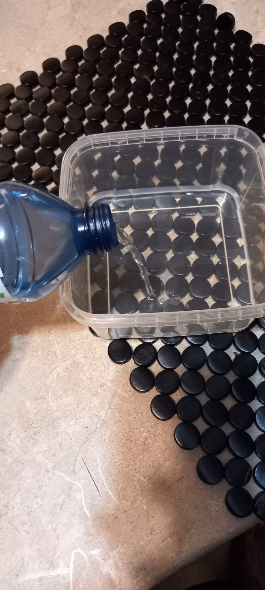
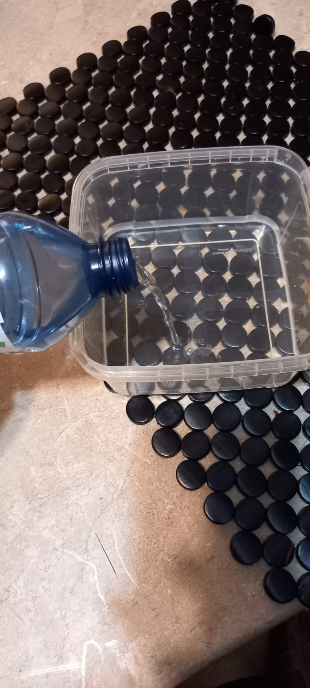
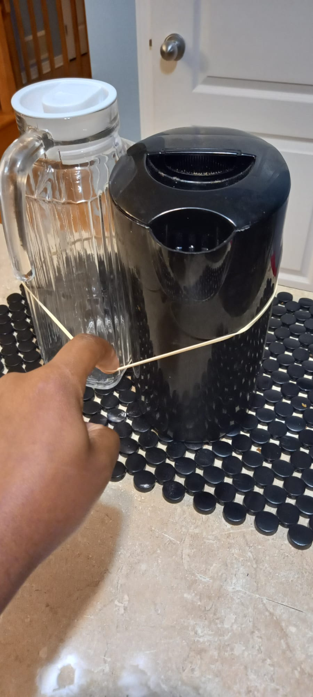
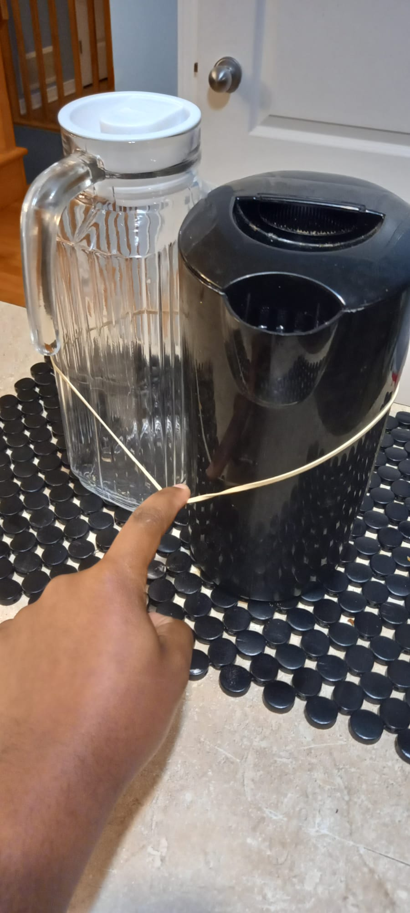
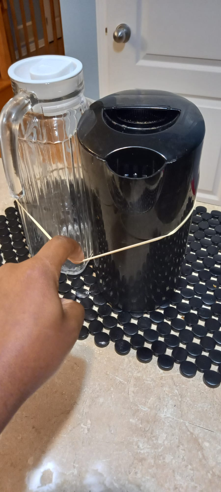
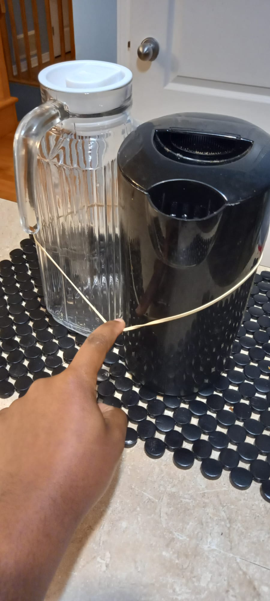

Materia: Water, oil, and a container
I filled the container with water and added oil on top.
The oil started to float on water because of its low desinty.
 


Materia: Apple cider vinegar, baking soda, a ballon, and empty bottle
I put the baking soda in the bottle and added the apple cider vinegar.
The reaction between the two created gas that filled the ballon.


Materia: Two balls, ramp surface
I placed the two balls on the ramp surface and let them roll down. As they descended, the balls speed increased, converting potential energy into kinetic energy.
Materia: Hot water, cold water, and two metal spoons.
I poured hot water into one cup and cold water into another and placed the spoons in each cup and touched them to feel the difference in thermal energy.
The spoon in the hot water felt warmer than the one in the cold water.


Materia: Metal spoon, hot water, and butter
I cut a piece of butter and placed it on the spoon and then placed that on top of hot water.
The butter melted due to the conduction of heat from the spoon.


Materia: Pan, water, and food coloring
I poured water into a hot pan to boil and added food coloring. The water started to move in a
circular motion due to convection currents.

Materia: a book, and table
I placed the book on the table at its edge. The book has potential energy because it is at rest and has the potential to fall.


Materia: Lemon, Honey.
My Home remedy for cold and flu is to cut lemon into circle pieces and add honey on top and let it seet for like a minute and
eat the whole thing together. It helps to reduce cold and flu symptoms.

Materia: a wind-up toy
I winded up the toy by pulling back and released it. The toy moves due to the mechanical energy stored in it.
Materia: a rubber band
I stretched the rubber band on two objects and released it. The rubber band snapped
back to its original position(back to those objects) due to the elastic potential energy stored in it.

 


